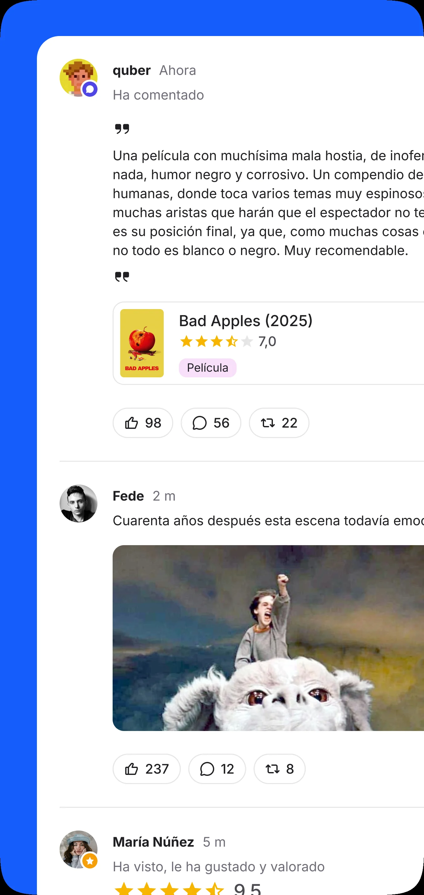
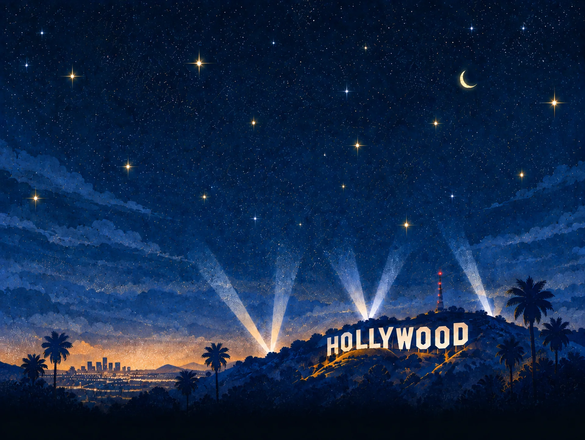
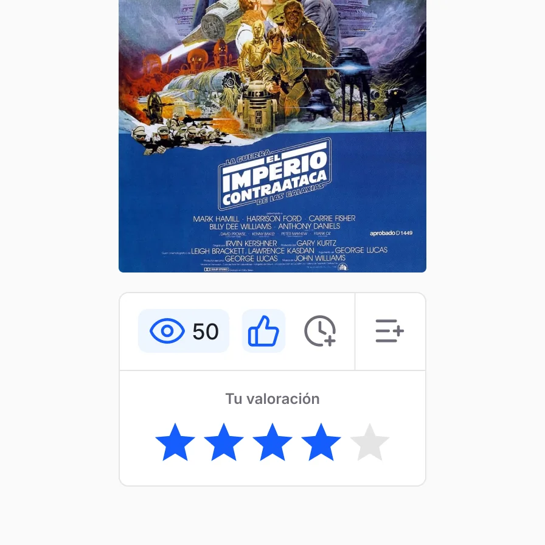
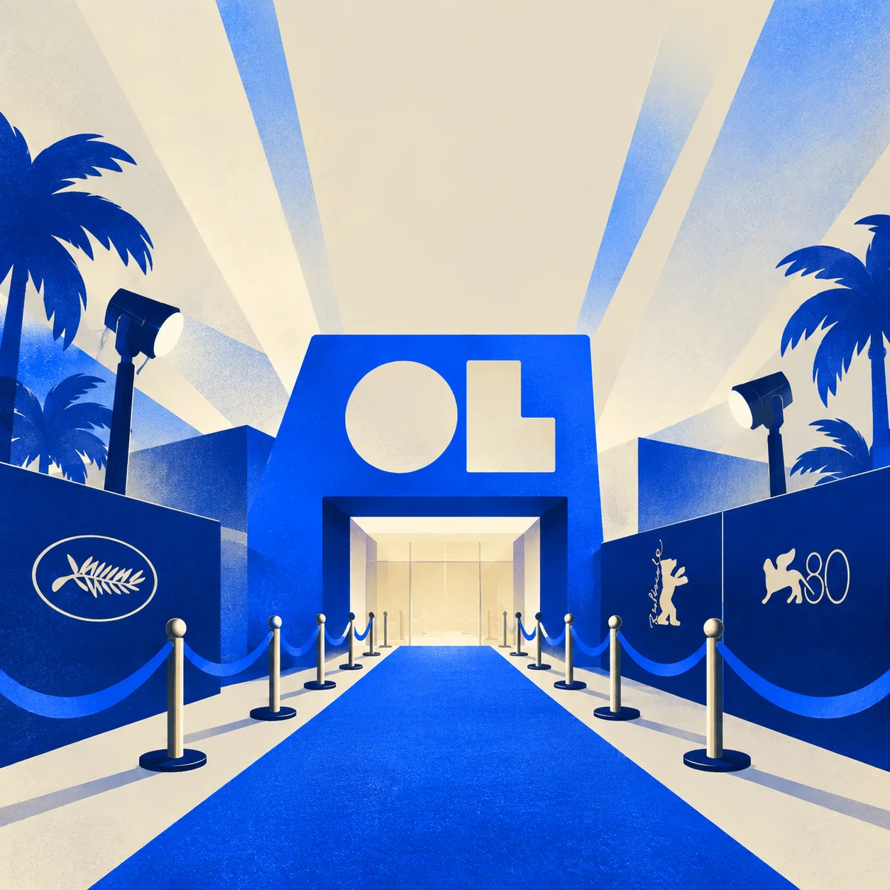
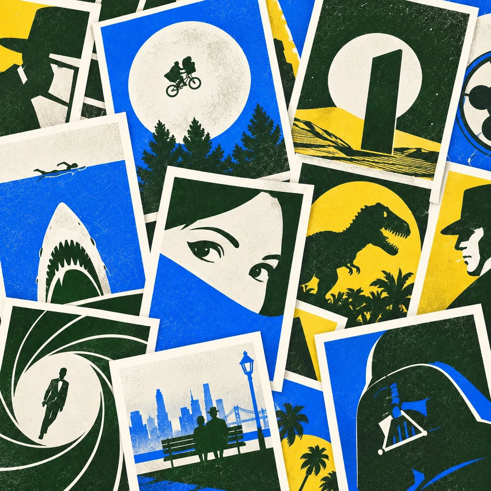
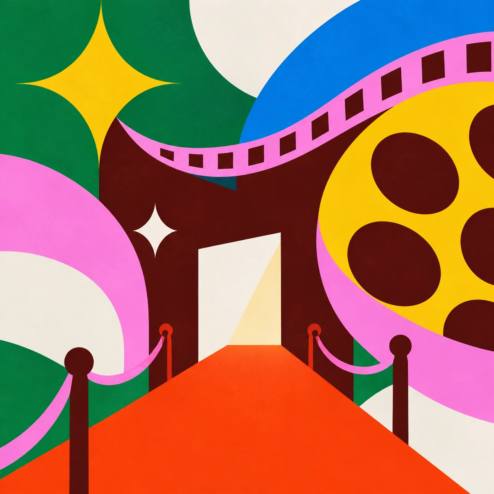
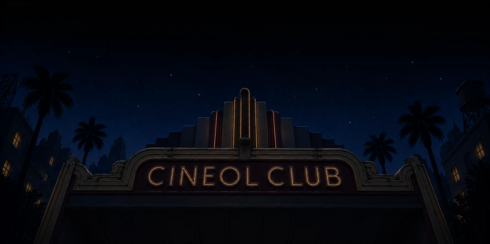
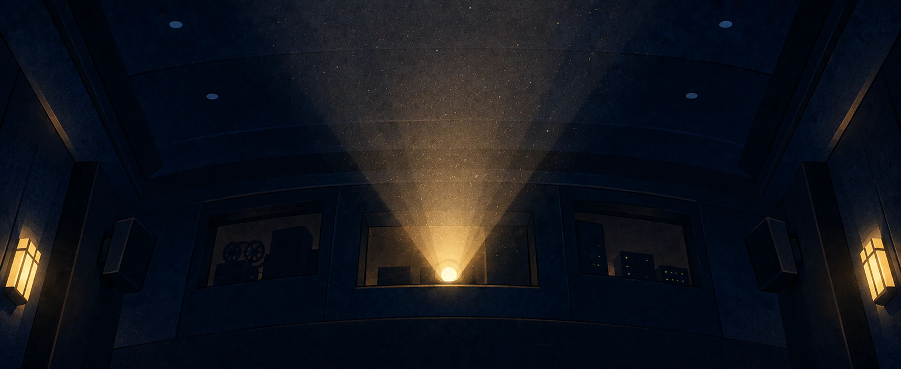
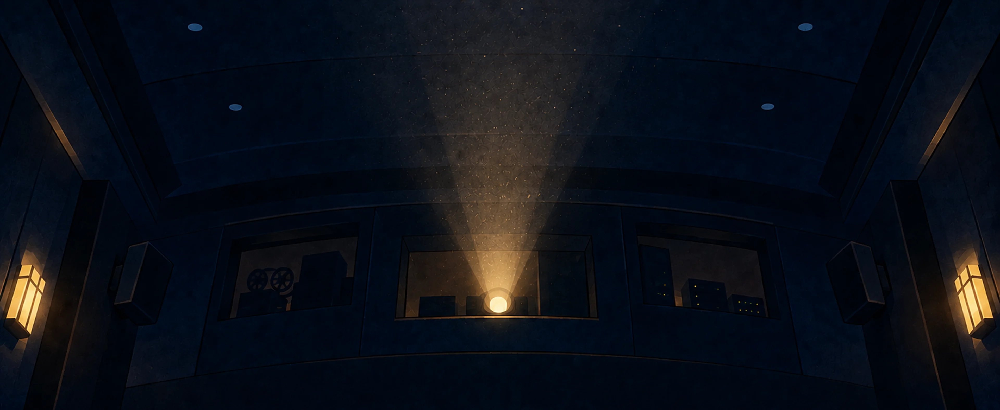
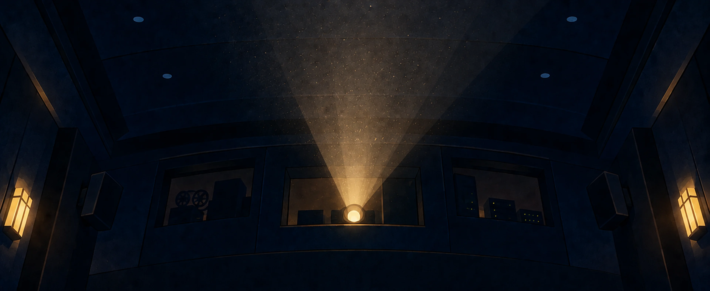

Comunidad de cinéfilos como tú. Sigue a usuarios reales. Lee sus valoraciones, sus listas, sus opiniones. Sin filtro de popularidad. Sin algoritmo.


La primera red social hecha por cinéfilos, para cinéfilos, en español.
Comunidad de cinéfilos como tú. Sigue a usuarios reales. Lee sus valoraciones, sus listas, sus opiniones. Sin filtro de popularidad. Sin algoritmo.

Archivo infinito. Todo lo que has visto y lo que te falta. Marca lo que has visto, lo que tienes pendiente, tu historial cinéfilo por fin ordenado.

Festivales y premios. De Cannes a San Sebastián. Más de 300 festivales internacionales con palmarés completo. Crúzalos con lo que ya has visto.


Estrenos. Lo que llega y no te puedes perder. Selección editorial semanal con recomendaciones argumentadas por el equipo de Cineol.
Artículos y críticas. La otra forma de ver cine. Creado por el equipo editorial de Cineol. Noticias, críticas, coberturas de festivales.

PróximamenteQue empiece el juego. Desbloquea logros según tus acciones y uso de Cineol. Tu historia cinéfila, contada en hitos.



